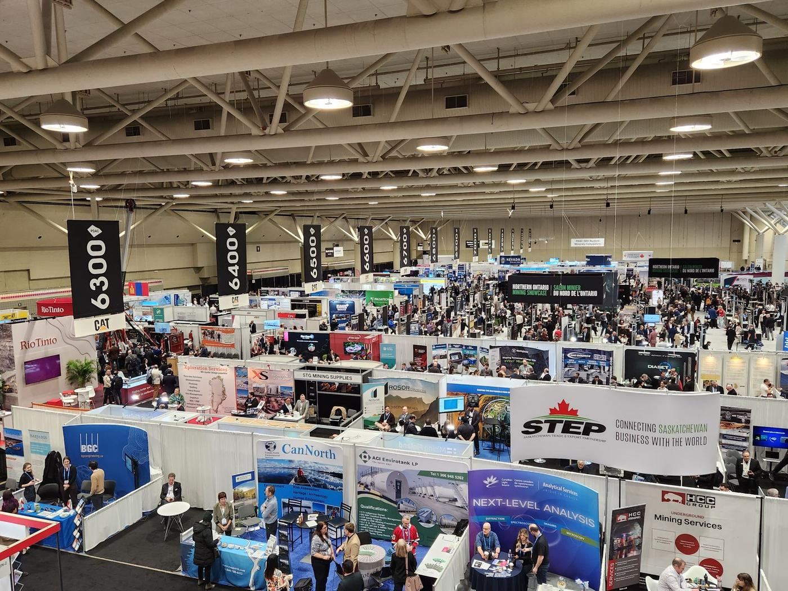

Expos · Expos
PDAC 2027 — The World’s Premier Mineral Exploration & Mining Convention
- Dates
- –
- Venue
- Metro Toronto Convention Centre, 222 Bremner Blvd, and Fairmont Royal York Hotel, 100 Front St W, Toronto, ON
- Location
- Toronto, Canada
- Format
- In-person
- Category
- Expos
- Industry
- Mineral exploration and mining convention with exhibition floor
- Organiser
- Prospectors & Developers Association of Canada (PDAC)
- Official website
- https://pdac.ca/convention-2027
About
Dates are local to the host city. Officially a convention with a large exhibit floor (Trade Show, Trade Show North, Investors Exchange). Dual official venues: Metro Toronto Convention Centre and Fairmont Royal York Hotel. The homepage wording 'an ever-growing audience of more than 32,000 attendees' is general marketing, not a labelled previous-edition actual, and was not stored.
Topics: mining, mineral exploration, resources, investment.
Sources
- Official — https://pdac.ca/convention-2027
- Official — https://pdac.ca/convention-2027/attending-2027/key-dates-venue-info-2027
Venues
- Metro Toronto Convention Centre — Convention centre · North Building 255 Front Street West; South Building 222 Bremner Boulevard, Toronto, Ontario, Canada · 1,232 capacity
- Fairmont Royal York — Hotel conference venue · 100 Front Street West, Toronto, Ontario, Canada